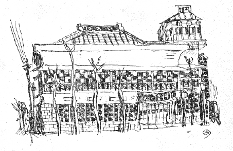
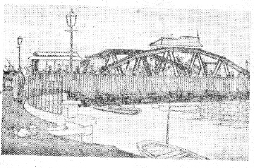

私事に傾くとすれば恐縮するが、今となつては強ち「私事」でもなく、これも「東京世相」の一つの波の色と化つてゐることだらう。

いろは牛鳥肉店
図は牛肉店「いろは」第八支店の、そこで僕の生育した家の正面を写すものであるが、図の向つて左、家の片影に遠見に走るところが、元柳町の、芸妓じんみちになるところで、家の前面に数本の梧桐が立つてゐる。この梧桐については別の文中に云つた。図の右端のガス燈のあるところが、元、「フラフ」のあつたところである。こゝから右へ居流れて、いつも客待ちの人力車夫が屯ろしてゐた。
家の大屋根から母屋への境界に、恰も軍艦の胴腹のやうにゑぐれたしきりが出来てゐるのは、家を西洋館まがひに見すべく、木のくり型とトタンでこの蛇腹やうのものを添へたわけで、このゑぐれたところに大字で右から「第八支店いろは牛鳥肉店」と横流しにペンキで書いてあつた。（図はこれの書き直しの時の有様でもあらうか、原図は明治四十年ごろの写真である。）「いろは」だけが赤がきだつたらう。
「いろは」或は「牛鳥」が赤字だつたこと、殊に「牛」の字と赤との関係は、これはいろは以前の牛肉店以来一つの慣習としてさう行はれたことで、今でも牛肉店に――引いては馬肉店にも――この仕来りは踏襲されてゐる。これは勿論それが目立つ意味と、獣肉は赤いから、そこに基づく由来があつただらう。いろはの営業種目の招牌には「牛羊豚肉営業」とあつて、事業上は牛鳥だけを扱つた。鳥は鶏肉、かしはと云つたものだ。
この家の三階はあとから取り附けのもので、いはゆる「おかぐら」普請の、これだけ八畳程の
三階の増築されたのはぼくの小学校時代だつた。（そして客のない時には概ねこゝがぼくの遊び場だつた。）――この三階から本屋の総二階にかけて、その正面及び側面見つきの、ガラス戸といふガラス戸が、全部、五色の色ガラスを市松にあしらつたものだつたが（一階は五色ではなく、普通ガラスだつた）、思ふにこれも家を西洋館めかしく仕立てる装飾目的の、いはゞ、ステインド・グラスといふ見込みだらう。ガラスは外国製品だつたやうである。飛び飛びに白の無地を交へて、クリムソン・レーキ、ウルトラマリン、ビリジヤン及びガムボージの各色を配した。
陽の当る時には、いつもそれ等を通して屋内の畳へ落ちる色とりどりの斜影が美しかつた。殊に黄色が冴え冴えとして美しかつた。そして、この五色の市松になつた、いろはのガラス障子は、その中に育つたぼくから云ふのではなく、当時これをはた見た先輩諸君の言葉に聞くに――最近辰野さん（隆博士）や佐藤春夫さんに逢つた時の偶然の話にも、これが出た――一種の「東京名物」だつたやうである。といふのが、市内の方々にあつたいろは各支店が、何れも同様の装備をしてゐたから。
今ぼくがこゝに考へようとするのは、かう云つた五色ガラスの家屋装飾が、何から来たゞらうといふことである――。
ぼくの父木村荘平（明治三十九年歿、六十七歳）は「いろは」牛肉店の経営だけが、その仕事ではなく、製茶貿易、諸獣屠殺、競馬、火葬場経営等々……いろんな方面に関係のあつたもので、競馬と屠獣の関係で三田四国町を開いたり（明治十二年）、町屋に火葬場を建てたり（明治二十六年）、甜菜の製糖会社であるとか（明治二十一年）、その同じ年まで日本麦酒会社の社長を仕め、
「諸獣屠殺」と云つたやうな、そのころの官令を以て「……大久保内務卿が三田四国町ニ動物育種場及び動物市場ヲ官設サレ、府下一ヶ所ヲ限リ、諸獣屠殺場ヲ新設シ、以ツテ模範タラシメントセラレ……」かういはれたやうな事業に父が関与したのは、明治十一年からのことと聞き、川路大警視からの手引きで三田界隈のこの事に手を染めたのが「牛鳥」に関係するはじめだつたといふことである。
それからぼつぼつ市内に「いろは」牛鳥肉店が開店しはじめたであらう。この「いろは」の命名は、物事のはじめのいろはから来てゐたといふことで、やがて転じて、いろは四十八店を市内に建てる念願といふことに転化されたものらしく、事実、「いろは」は市内目貫きの各所に、順に何号支店といふ工合に号を追うて増店され、ぼくの生れた家は、その第八番目の支店で、明治十九年に父の開店するところとなつたといひ、当時「千円若干」の金で元の所有者から買取られたといふことを聞いてゐる。当時の千円はその後のどの位の価格となるであらうか、初め父が芝三田に借入れた、何んでも元来は某大名屋敷だつたとか云はれる家は、――諸獣屠殺か競馬かに関して借入れたものであらう――月九十円の家賃だつたとか伝聞する。
ぼくのそのいろは第八支店に生ひ立つたころほひ（明治二十六年以降）がこの商店の興隆期に際会するものらしく、子供心にも、年々何号何号の支店が増えつゝあつたことを心うれしく聞いてゐた。
「遠路之御厭ひなく御来車且つ御用被仰付日増に繁昌候段有難仕合に奉存……」
といふやうな書き出しを以つて、新しく神田連雀町へも店を設けるといふ広告を読売新聞に出したのが、明治二十年のことだ。この広告にはまだしかし店は「五軒」しか載つてゐず、次は深川高橋に支店を用意してゐるといふことで結んで、
「行々は府下各所へいろは四十八店を開業仕候間……」
さう切り出したのが、このごろのことだらう。まだぼくの「第八支店」はこの時の広告文章の中には数に載つてゐない。
それが越えて明治二十五年（ぼくの生れる前年）になると、市内のいろはの店々へ無料広告を扱ふから各有志の方々にお申出を待つといふやうな広告募集を時事新報へ載せて、「但シ広告ハ粗美ヲ編セズ、枠附額面仕立ニテ、高サ一尺八寸、幅二尺以内」云々と定めた。この時の広告文字中には、支店連名としてぼくの第八支店も出てゐるのである。店が明治二十年以後間もなく創業になつたことは、これに依つて間違ひない。
やがて後年に――これはぼくの年齢にして相当よく記憶にあることだから、明治三十年後のことであらう――
上野山下の旧「がん鍋」を手に入れようとして、成らず（その理由はぼくは詳しくしない）、それで「浅草」にも「日本橋」にも「両国」にも大体市内の目ぼしい個所には店があるのに、上野にだけは結局いろはの無かつたのは、そのためと、後々までも家人の一つ話となつてゐたことが耳にある。がん鍋はその家のありやうはぼくの如き当時年少で詳知しないけれども、錦絵などでは見る家の、その名は幼少からよく聞いてゐた名代の店屋で、維新の彰義隊騒ぎに、籠城の士がはじめにこのがんなべの屋上から官軍を防戦したといふ話など喧伝される、古い家である。――間違ひでないとすれば年少ぼくの記憶では、そのがん鍋を手に入れかねたといふ時分から、そろそろ、いろはもその「全盛」を下らうとしたものではなかつたかと考へてゐる。父が急逝したのはぼくの十四歳の春であつた。
明治十九年に「いろは」第八支店を父が経営したといふが、数へればそれはぼくなどの生れる八年前のことで、そしてその当時からすでにこの家は前通り二階に五色ガラスの装飾障子を持つてゐたといふが、丁度図中に「明治十○年○月○日御届」とある、井上安治うつす版画に、この家の五色ガラスせる前面の様子を写したものがあるので、類推の手がかりとなる。
思ふに父はこの家を手に入れると、早速、家全体の「五色ガラス」装備をしたことであつたらう。この家はいろはになる前は元綿屋であつたといふが、綿屋に五色ガラスの装飾障子は要らなかつたであらう。
こゝに一つの疑問は、井上安治のこの版画を「御届出」でた明治十○年といふ、その○年の「数」であるが、十代とすればギリギリに勘定して丁度「十九年」の、ぼくの父がこの家を改装？した年限に当るとして、しかし元々果してこの「十○年」が正確な「十何々年」といふを現はす年数の指示だらうか、一つにはこの版画が「両国大平板」とあるので、図のいろはの裏手に当つた大平錦絵店からこれが発行されたことがわかり、大平がそのころそこに盛業してゐたことが示される。画者井上安治は小林清親門の逸足で、明治二十二年にはすでに、二十歳を少しの若さで夭折してゐる惜しむべき画人である。
思ふに「十○年」――問題の十九年――をもずれて、この版画は、明治二十年代へかけての発行ものではなかつたらうか。少くともギリギリ明治十九年、この家が、五色ガラスの装飾障子に改装されてから、それから安治の写した「真写」ではなかつたか。
父は諸獣屠殺の事に手を染めたころ、その「化学教師」として、墺国人のシーバーなる人を雇つたと云ひ、その他欧米人に知り合ひを持ち、当然横浜・神戸あたりの海関貿易の方面とも遠くなかつたやうである。一体東京に於ける牛鳥肉店、「いろは」などよりも元祖の、銀座（れんが）の松田など、これが抑々その店頭装備を五色ガラスに色めかしたやうで、その元といへば、開港場（横浜）の外人相手のチヤブ屋から来てゐると考へられる節がある――ぼくはぼくの生家のガラス装飾を所詮これに基づくと考へてゐるものである。
洋品洋物は当時東京は横浜を宗として、洋趣味も、そこから流れたことは、各方面の史実に明らかである。新時代の風の「チヤブ屋」風俗も、牛肉店などのモードも、旧東京（江戸）にその範を求めることは出来ない。云ふところのフラフ（旗印）などと共々、五色ガラスの店頭装飾も、当時洋風の先端を切つたハマ譲りである。
氏の晩年であつたが、馬場孤蝶さんと逢つて話した時に、それは主として「一葉」及びその「時代」について馬場さんから話を聞く一席のことであつたが、馬場さんは一葉作「にごりえ」に言及しながら、当時一葉のゐた丸山福山町界隈の「にごりえ」風な家々には、その家の見附きの二階ガラスに、五色ガラスを点じてゐた――。
と云ひながら、座のぼくを顧みて「さうさう、木村さんの家のいろはのやうにね」と話されたことがあつた。
「にごりえ」に関する文献といふか、表証について、これは小さからぬ逸事とぼくは以来考へてゐるものだが――所詮「にごりえ」の家々は娼家営業のものである。やがては「銘酒店」ともなり、いはゆる「曖昧屋」の、末は明治末の浅草千束町（十二階下）から後の
 東玉の井へと転化するモードの一齣だ。その先働として発した明治二十八年（にごりえの発表、明治二十八年九月）代の本郷丸山福山町あたりの娼家装飾――その五色ガラス――は、これ又、基づくところ開港地のチヤブ屋から来てゐること明らかだと思ふ。
東玉の井へと転化するモードの一齣だ。その先働として発した明治二十八年（にごりえの発表、明治二十八年九月）代の本郷丸山福山町あたりの娼家装飾――その五色ガラス――は、これ又、基づくところ開港地のチヤブ屋から来てゐること明らかだと思ふ。
浅草橋
一葉の娼家には「軒に御神燈さげて盛り塩景気よく、空壜か知らず、銘酒あまた棚の上にならべ」とある。
当時市内の「新しい商売家」であつた娼家とか、今云ふ「大衆食堂」風な牛屋などが、その辺からその店構への標識なり装飾として「異人館」めかした五色ガラスの障子をその店頭の見つきにあしらつたことは、極く自然な思ひ付きだつたと類推される。伝統ともいふか、これの連綿として尽きないのは、昨年の末に、戦災地へ近ごろ新しく娼家の家も建揃つた玉の井へ行つて見たところ、その家々「ガラス戸」の扱ひ工合に、この「五色ガラス」の旧智が採用してあるのを見た。そしてこれは吉原にも今現にある。しかし都内目貫きのところには今では何商売を問はず、この「装飾」は見かけないやうである。――半世紀以前には斬新奇抜だつた
ぼくはぼくの家の「装飾」――それがそのころ市内の一種のメイブツだつたと云はれる――をそんな風に考へてゐる。
いろはにはその屋内装飾――つまり客間用に――その壁面へ持つていつて数多くの大きな鏡をはめ込むと共に、柱々には、一々細長い、ゴツゴツ紫檀わくのついた、小形のいはゆる「
女中達には座持ちの「サービス」つまり客笑談までのことはあつても、色めいたサービスは無い。若しあれば彼女は職場を退かなければならなかつた。それが軽子（かること彼女達を呼ぶ）間の仁義であつた。――（牛肉店の女中の話については、改めて別の本にとりまとめて書くだらう。）「いろは」牛肉店の客間装飾に配置された鏡面の類は、何れも、舶来ものゝ、部厚なキリコ風の、映像にムラの来ない厚板ガラスだつた。「横浜」仕込みの品ものだつたと思ふ。恐らくは障子用の五色ガラスも同じ仕入れのものであつただらう。＝二三・十一・三誌